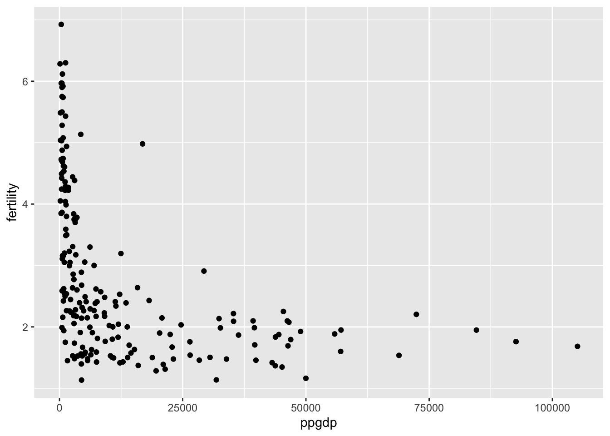

Code
library(tidyverse)
library(readxl)
library(ggplot2)
library(dplyr)
library(tidyr)
library(alr4)
library(smss)
knitr::opts_chunk$set(echo = TRUE)library(tidyverse)
library(readxl)
library(ggplot2)
library(dplyr)
library(tidyr)
library(alr4)
library(smss)
knitr::opts_chunk$set(echo = TRUE)Predictor: ppgpd Response: Fertility
No, a straight-line mean function doesn’t seem plausible for this graph as ppgdp isn’t evenly distributed across the x-asix, as seen in the scatter plot. As fewer data are found further along the x-axis, a straight-line mean function wouldn’t accurately summarize the data.
un <- data.frame(UN11)
head(un) region group fertility ppgdp lifeExpF pctUrban
Afghanistan Asia other 5.968 499.0 49.49 23
Albania Europe other 1.525 3677.2 80.40 53
Algeria Africa africa 2.142 4473.0 75.00 67
Angola Africa africa 5.135 4321.9 53.17 59
Anguilla Caribbean other 2.000 13750.1 81.10 100
Argentina Latin Amer other 2.172 9162.1 79.89 93ggplot(un, aes(x=ppgdp, y=fertility)) + geom_point()
Yes, a simple linear regression model seems plausible for this graph as the data is structured in linear fashion, showing that as fertility goes up, ppgpd goes down.
un <- data.frame(UN11)
head(un) region group fertility ppgdp lifeExpF pctUrban
Afghanistan Asia other 5.968 499.0 49.49 23
Albania Europe other 1.525 3677.2 80.40 53
Algeria Africa africa 2.142 4473.0 75.00 67
Angola Africa africa 5.135 4321.9 53.17 59
Anguilla Caribbean other 2.000 13750.1 81.10 100
Argentina Latin Amer other 2.172 9162.1 79.89 93ggplot(un, aes(x=log(ppgdp), y=log(fertility))) + geom_point()The slope of the prediction equation would change as the currency conversion would change the range of income on the axis, which in turn the shape of the data and the regression line.
The correlation of the prediction equation wouldn’t change as the currency conversion is a linear change, not affecting the magnitude of a correlation between the variables.
From the below scatter plot matrix, the measurements for the sites don’t change drastically as the years age, but many do take a similar decline in the more recent years, while the ones who don’t decline in recent years have instead slightly inclined. Particularly, the APMAM, APSAB, APSLAKE, all trend upwards from ~1980 on, while OPBPC, OPRC, OPSLAKE, and BSAAM all trend downward in the same time period. We can also see from the matrix that the sites measurement comparisons within these two groups are clustered together and aligned seemingly linear, while sites comparisons across the two groups do not have a visable relationship, linear or otherwise.
water <- data.frame(water)
head(water) Year APMAM APSAB APSLAKE OPBPC OPRC OPSLAKE BSAAM
1 1948 9.13 3.58 3.91 4.10 7.43 6.47 54235
2 1949 5.28 4.82 5.20 7.55 11.11 10.26 67567
3 1950 4.20 3.77 3.67 9.52 12.20 11.35 66161
4 1951 4.60 4.46 3.93 11.14 15.15 11.13 68094
5 1952 7.15 4.99 4.88 16.34 20.05 22.81 107080
6 1953 9.70 5.65 4.91 8.88 8.15 7.41 67594pairs(water)
Of the five variables, easiness and raterInterst appear to be the least correlated with the other three variables.We can see this as in the scatterplot matrix, the easiness and raterInterest plots are the least linear. On the other hand, the quality, helfulness, and clarity ratings appear to be strongly correlated as their scatterplots form a clearly linear shape.
rate <- data.frame(Rateprof)
head(rate) gender numYears numRaters numCourses pepper discipline dept
1 male 7 11 5 no Hum English
2 male 6 11 5 no Hum Religious Studies
3 male 10 43 2 no Hum Art
4 male 11 24 5 no Hum English
5 male 11 19 7 no Hum Spanish
6 male 10 15 9 no Hum Spanish
quality helpfulness clarity easiness raterInterest sdQuality sdHelpfulness
1 4.636364 4.636364 4.636364 4.818182 3.545455 0.5518564 0.6741999
2 4.318182 4.545455 4.090909 4.363636 4.000000 0.9020179 0.9341987
3 4.790698 4.720930 4.860465 4.604651 3.432432 0.4529343 0.6663898
4 4.250000 4.458333 4.041667 2.791667 3.181818 0.9325048 0.9315329
5 4.684211 4.684211 4.684211 4.473684 4.214286 0.6500112 0.8200699
6 4.233333 4.266667 4.200000 4.533333 3.916667 0.8632717 1.0327956
sdClarity sdEasiness sdRaterInterest
1 0.5045250 0.4045199 1.1281521
2 0.9438798 0.5045250 1.0744356
3 0.4129681 0.5407021 1.2369438
4 0.9990938 0.5882300 1.3322506
5 0.5823927 0.6117753 0.9749613
6 0.7745967 0.6399405 0.6685579ratings <- select(rate, c('quality','helpfulness','clarity', 'easiness', 'raterInterest'))
pairs(ratings)
Graphically portray how the explanatory variable relates to the outcome variable in each of the two cases
Summarize and interpret results of inferential analyses.
In the first grap, we are looking at a relationship between a categorical predictor and response variable. I used geom_count so that overlapping data points wouldn’t affect the appearance of the relationship. From the graph, we can see that liberal and very liberal repsondents attend church the least frequently. Those who attended religious services most frequently have a range of political beliefs, a higher concentration of politically like-minded folks attending church more often isn’t seen in this dataset.
Looking at the other graph, I used geom_smooth as this graph looks at the relationship between two continuous variables. From the graph, there is not a strong linear pattern, indicating that the relationship between these two variables isn’t linear. However, we can see that the most tv was watched by respondents with a GPA under 3.0, and respondents with a GPA above 3.0 watched the least tv.
ggplot(student.survey, aes(re, pi)) + geom_count()Error in ggplot(student.survey, aes(re, pi)): object 'student.survey' not foundggplot(student.survey, aes(hi, tv)) + geom_smooth()Error in ggplot(student.survey, aes(hi, tv)): object 'student.survey' not found